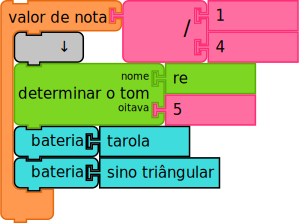
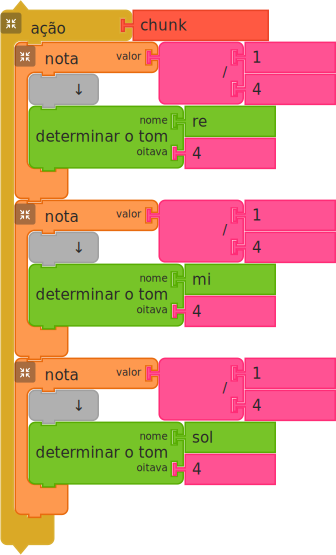
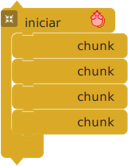
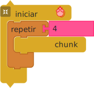
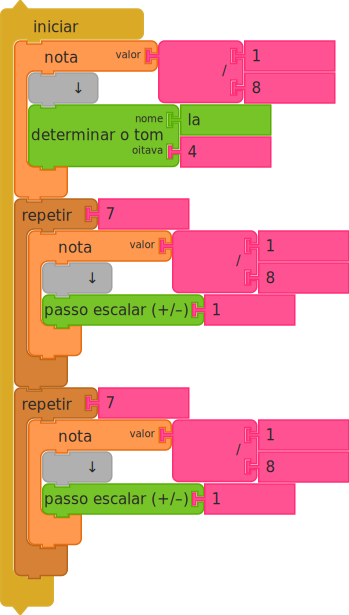
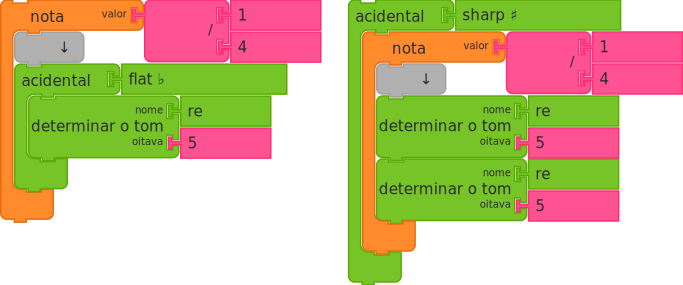
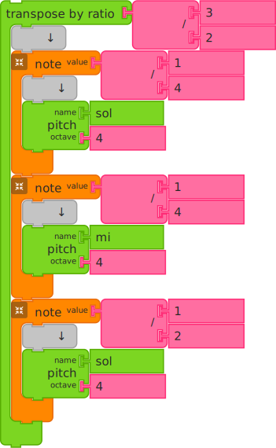
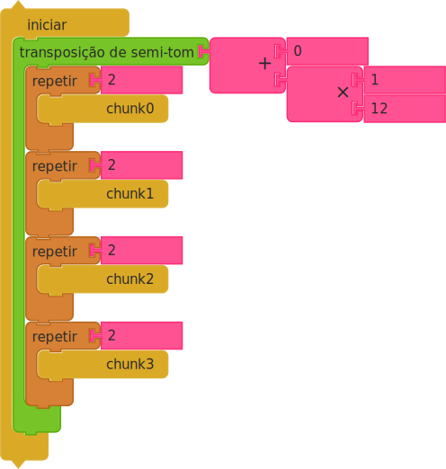

Guia de Programação com Music Blocks
English | Español | 日本語 | 中文 | Português
O guia do Turtle Blocks é um bom lugar para começar a aprender o básico. Neste guia, ilustramos os recursos musicais guiando o leitor através de numerosos exemplos.
A documentação básica do Music Blocks também é um bom recurso.
E há um curto Guia de Depuração para ajudá-lo com sua programação.
Este guia detalha os muitos recursos musicais da linguagem.
ÍNDICE
- Começando
- Fazendo Sons
- Programando com Música
-
Widgets
- Monitorando Status
- Gerando grupos de Notas
- Gerando Ritmos (ou Como Fazer uma Bateria Eletrônica)
- Modos Musicais
- Mudando Métrica
- A Matriz Altura-Tambor
- Explorando Proporções Musicais
- Gerando Alturas Arbitrárias
- Mudando Andamento
- Criando Timbres Personalizados
- O Teclado Musical
- Mudando Temperamento
- O Osciloscópio
- O Sampler
- Arpejo
- Além do Music Blocks
- Apêndice
Muitos dos exemplos dados no guia têm links para códigos que você pode executar. Procure por
links RUN LIVE.
1. Começando
Voltar para o Índice | Próxima Seção (2. Fazendo Sons)
Music Blocks é projetado para rodar em um navegador. A maior parte do desenvolvimento foi feita no Chrome, mas também deve funcionar no Firefox, Opera e algumas versões do Safari. Você pode executá-lo em musicblocks.sugarlabs.org, em github io, ou baixando uma cópia do código e executando uma cópia local diretamente do sistema de arquivos do seu computador. (Note que ao executar localmente, você pode ter que usar um servidor local para expor todos os recursos.)
Este guia detalha os recursos específicos de música do Music Blocks. Você também pode estar interessado no Guia do Turtle Blocks, que revisa muitos recursos de programação comuns a ambos os projetos.
Para mais detalhes sobre como usar o Music Blocks, veja Usando Music Blocks. Para mais detalhes sobre como usar o Turtle Blocks, veja Usando Turtle Blocks JS.
2. Fazendo Sons
Seção Anterior (1. Começando) | Voltar para o Índice | Próxima Seção (3. Programando com Música)
Music Blocks incorpora muitos elementos comuns da música, como altura, ritmo, volume, e, até certo ponto, timbre e textura.
2.1 Blocos de Valor da Nota
No coração do Music Blocks está o bloco Valor da nota. O bloco Valor da nota é um contêiner para um bloco de Altura que especifica a duração (valor da nota) da altura.
No topo do exemplo acima, um único bloco (destacado) Valor da nota é mostrado.
O 1/8 é o valor da nota, que é, neste caso, uma colcheia.
Na parte inferior, duas notas que são tocadas consecutivamente são mostradas. Ambas são
notas 1/8, tornando a duração de toda a sequência 1/4.
RUN LIVE
Neste exemplo, diferentes valores de nota são mostrados. De cima para baixo, eles são:
1/4 para uma semínima, 1/16 para uma semicolcheia, e
1/2 para uma mínima.
RUN LIVE
Note que quaisquer operações matemáticas podem ser usadas como entrada para o Valor da nota.
Como conveniência, um menu circular é usado para selecionar valores de nota comuns.

As dimensões da imagem excedem o tamanho ideal. Por favor, selecione a imagem para acessar uma visualização expandida.
Por favor, consulte a imagem acima para uma representação visual dos valores das notas.
2.2 Blocos de Altura
Como vimos, blocos de Altura são usados dentro dos blocos de Valor da nota. O bloco de Altura especifica o nome da altura e a oitava da altura de uma nota que, em combinação, determina a frequência (e, portanto, a altura) na qual a nota é tocada.
Existem muitos sistemas que você pode usar para especificar o nome e a oitava de um bloco de altura. Alguns exemplos são mostrados acima.
O bloco de Altura superior é especificado usando um bloco de Solfejo (Sol
na Oitava 4), que contém as notas Dó Ré Mi Fá Sol Lá Si .
A altura do próximo bloco é especificada usando um bloco de Nome da altura (G
na Oitava 4), que contém as notas C D E F G A B.
O próximo bloco é especificado usando um bloco de Grau da escala (a
5ª nota na escala, 'G', também na 'Oitava 4'),
C == 1, D == 2, .... O bloco de Grau da escala tem números como o
bloco Número, mas também tem um acidente para que o usuário possa tocar alturas
fora de uma determinada tonalidade.
O próximo bloco é especificado usando um bloco de Enésima Altura Modal. Este bloco recebe um
argumento numérico e o transforma na "enésima altura de uma determinada escala" com um índice de 0
(ou seja, C para C maior é 0). Portanto, para obter G, inserimos o número
4. O argumento da oitava forçará a oitava para cima ou para baixo; caso contrário, o usuário pode apenas continuar
subindo ou descendo em qualquer direção para percorrer as alturas escalares de qualquer modo.
O próximo bloco é especificado usando um bloco de Número da altura (o
7º semitom acima de C na Oitava 4 é
G). O deslocamento para o número da altura pode ser modificado usando o
bloco Definir deslocamento do número da altura.
A altura do próximo bloco é especificada usando o bloco Hertz em conjunto
com um bloco Número (392 Hertz é G na
Oitava 4), que corresponde à frequência do som produzido.
A oitava é especificada usando um bloco numérico e é restrita a números inteiros. No caso em que o nome da altura é especificado pela frequência, a oitava é ignorada. O argumento da oitava também pode ser especificado usando um bloco de Texto com valores current (atual), previous (anterior), next (próximo) que faz como 0, -1, 1 respectivamente.
A oitava do próximo bloco é especificada usando um bloco de texto current (Sol
na Oitava 4).
A oitava do próximo bloco é especificada usando um bloco de texto previous (G
na Oitava 3).
A oitava do último bloco é especificada usando um bloco de texto next (G
na Oitava 5).
Note que o nome da altura também pode ser especificado usando um bloco de Texto.
Como conveniência, um menu circular é usado para selecionar altura, acidente e oitava.
As dimensões da imagem excedem o tamanho ideal. Por favor, selecione a imagem para acessar uma visualização expandida.


Por favor, consulte os gráficos acima para uma representação visual de onde as notas estão localizadas em um teclado ou pauta.
2.3 Múltiplas Alturas
Múltiplas alturas simultâneas podem ser especificadas adicionando múltiplos blocos de Altura em um único bloco de Valor da nota, como no exemplo acima. RUN LIVE
2.4 Pausas
Uma pausa da duração do valor da nota especificado pode ser construída usando um bloco de Silêncio no lugar de um bloco de Altura. RUN LIVE
2.5 Tambores

Em qualquer lugar que um bloco de Altura possa ser usado — por exemplo, dentro da matriz ou de um bloco de Valor da nota — um bloco de Amostra de Tambor também pode ser usado em seu lugar. Atualmente existem cerca de duas dúzias de amostras diferentes para escolher. O tambor padrão é um bumbo. RUN LIVE

Assim como no exemplo de múltiplas alturas acima, você pode usar múltiplos blocos de Tambor dentro de um único bloco de Valor da nota, e combiná-los com blocos de Altura também. RUN LIVE
3. Programando com Música
Seção Anterior (2. Fazendo Sons) | Voltar para o Índice | Próxima Seção (4. Widgets)
Esta seção do guia discute como usar grupos de notas para programar música. Note que você pode programar com grupos que você cria manualmente ou usar o widget O Criador de Frases para ajudá-lo a começar.
3.1 Ações

Toda vez que você cria uma nova pilha de Ação, o Music Blocks cria um novo bloco
específico para, e vinculado a, essa pilha. (O novo bloco é encontrado no topo da
paleta Bloco, encontrada na borda esquerda da tela.) Clicar e executar
este bloco é o mesmo que clicar em sua pilha. Por padrão, os novos blocos são nomeados
chunk, chunk1, chunk2... mas você pode renomeá-los
editando os rótulos nos blocos de Ação.
Um bloco de Ação contém uma sequência de ações que só serão executadas quando o bloco for referido por outra coisa, como um bloco de início. Isso é útil na orquestração de programas musicais mais complexos.
Um Bloco Iniciar é uma Ação que será executada automaticamente assim que o botão iniciar for pressionado. É aqui que a maioria dos seus programas começará. Existem muitas maneiras de Executar um programa: você pode clicar no botão Executar no canto superior esquerdo da tela para executar a música em uma velocidade rápida; um toque longo no botão Executar irá executá-la mais devagar (útil para depuração); e o botão Passo pode ser usado para percorrer o programa um bloco por toque no botão. (Um toque extra longo no botão Executar reproduzirá a música lentamente. Um toque longo no botão Passo percorrerá o programa nota por nota.)
No exemplo acima, o bloco de Ação chamado "chunk" está dentro de um bloco Iniciar, o que significa que quando qualquer um dos botões de início for pressionado, o código dentro do bloco Iniciar (o bloco de Ação) será executado. Você pode adicionar mais grupos após este dentro do bloco Iniciar para executá-los sequencialmente.


Você pode repetir ações usando múltiplos blocos de Ação ou usando um bloco Repetir. RUN LIVE
Você também pode misturar e combinar ações. Aqui tocamos o bloco de Ação com nome
chunk0, seguido por chunk1 duas vezes, e então
chunk0 novamente.
RUN LIVE
Mais alguns grupos e podemos fazer uma música. (Você consegue ler a notação do bloco bem o suficiente para adivinhar o resultado? Você está familiarizado com a música que criamos?) RUN LIVE
3.2 Transformações de Altura
Existem muitas maneiras de transformar altura, ritmo e outras qualidades sonoras.
3.2.1 Bloco de Passo de Altura

O bloco Passo de Altura moverá para cima ou para baixo notas em uma escala a partir da última nota
tocada. No exemplo acima, blocos de Passo de Altura são usados dentro de
blocos Repetir para repetir o código 7 vezes, tocando para cima e para baixo em uma
escala.
RUN LIVE
Outra maneira de mover para cima e para baixo notas em uma escala é usar os blocos Passo Escalar Para Cima e Passo Escalar Para Baixo. Esses blocos calculam o número de semitons para a próxima nota no modo atual. (Você pode ler mais sobre Modos Musicais abaixo.) Note que o bloco Número da Altura do Mouse retorna o número da altura da nota mais recente tocada.
Neste exemplo, estamos usando o bloco Comprimento do modo, que retorna o número de passos escalares no modo atual (7 para modos Maior e Menor). RUN LIVE
3.2.2 Sustenidos e Bemóis

O bloco Acidente pode envolver blocos de Altura,
blocos de Valor da nota, ou grupos de notas dentro de
blocos de Ação. Um sustenido aumentará a altura em um meio
tom. Um bemol diminuirá em um meio tom. No exemplo, à esquerda, apenas o
bloco de Altura ré é abaixado em um meio tom; à direita, ambos os
blocos de Altura são aumentados em um meio tom. (Você também pode usar um acidente dobrado-sustenido ou
dobrado-bemol.)
RUN LIVE
3.2.3 Ajustando Transposição
Existem várias maneiras de transpor uma altura: por semitom ou passos escalares ou por uma razão.
O bloco Transposição-semitom (acima à esquerda) pode ser usado para fazer mudanças maiores
na altura em unidades de meio tom. Um número positivo desloca a altura para cima e um número negativo
desloca a altura para baixo. A entrada deve ser um número inteiro. Para deslocar para cima uma oitava inteira,
transponha por 12 meios tons. -12 deslocará para baixo uma oitava
inteira.
O bloco Transposição-escalar (acima à direita) desloca uma altura com base na tonalidade
e modo atuais. Por exemplo, em Dó Maior, uma transposição escalar de
1 transporia Dó para Ré (mesmo que seja uma
transposição de 2 meios tons). Para transpor Mi para
Fá é 1 passo escalar (ou 1 meio tom). Para deslocar uma
oitava inteira, transponha escalarmente pelo comprimento do modo para cima ou para baixo. (Em escalas maiores, o comprimento do modo
é 7.)
RUN LIVE

O bloco Transpor-por-razão desloca uma altura com base em uma razão. Por exemplo, uma razão de 2:1 deslocaria uma altura em uma oitava; uma razão de 3:2 deslocaria uma altura em uma quinta. RUN LIVE
Como conveniência, várias transposições escalares padrão são fornecidas: Uníssono, Segunda, Terça, ..., Sétima, Terça abaixo, e Sexta abaixo, bem como uma transposição para Oitava.

No exemplo acima, pegamos a música que programamos anteriormente e a aumentamos em uma oitava. RUN LIVE

Um cent é uma unidade de medida para a razão entre duas frequências. Um semitom é definido como 100 cents. A frequência entre duas alturas adjacentes seria 50 cents. Você pode usar o bloco Transposição de semitom para deslocar uma altura por cents.
No exemplo acima, G4 + 50 cents é 403Hz. (Lembre-se que G4 é 392Hz e G#4 é 415Hz). RUN LIVE

Você também pode usar o bloco de razão para cents, embora a matemática seja um pouco mais complicada. RUN LIVE

O bloco Registro fornece uma maneira fácil de modificar o registro (oitava) das
notas que o seguem. No exemplo acima, ele é usado primeiro para aumentar a
nota Mi 4 em uma oitava e depois para diminuir a nota Sol 4
em uma oitava.
RUN LIVE
3.2.4 Resumo dos Movimentos de Altura
| Representação | Movimento de Altura | Propriedades |
|---|---|---|
| Passo Escalar | escalar | 0=sem mudança |
| 1=próxima altura escalar na tonalidade e modo atuais | ||
| -1=altura escalar anterior na tonalidade e modo atuais | ||
| Se o argumento para o passo escalar for positivo, ele se move para cima na escala; se for negativo, ele se move para baixo na escala. |
| Código Music Blocks para Passo Escalar |
|---|
 |
| O exemplo acima demonstra viajar para cima e para baixo na escala maior movendo uma oitava para cima da nota inicial, dó, uma nota de cada vez e depois voltando para baixo da mesma maneira. |
| Notação Padrão com Passo Escalar |
|---|

|
| Representação | Movimento de Altura | Propriedades | |||||||||||||||||||||||||||||||||||||||||||||||||||||||||||||||||||||||||||||||||||||||||||||||||||||||||||||||||||||||||||||||||||||||||||||||||||||||||||||||||||||||||||||||||||||||||||||||||||||||||||||||||||||||||||||||||||||||||||||||||||||||||||||||||||||||||||||||||||||||||||||||||||||||||||||||||||||||||||||||||||||||||||||||||||||||||||||||||||||||||||||||||||||||||||||||||||||||||||||||||||||||||||||||||||||||||||||||||||||||||||||||||||||||||||||||||||||||||||||||||||||||||||||||||||||||||||||||||||||||||||||||||||||||||||||||||||||||||||||||||||||||||||||||||||||||||||||||||||||||||||||||||||||||||||||||||||||||||||||||||||||||||||||||||||||||||||||||||||||||||||||||||||||||||||||||||||||||||||||||||||||||||||||||||||||||||||||||||||||||||||||||||||||||||||||||||||||||||||||||||||||||||||||||||||||||||||||||||||||||||||||||||||||||||||||||||||||||||||||||||||||||||||||||||||||||||||||||||||||||||||||||||||||||||||||||||||||||||||||||||||||||||||||||||||||||||||||||||||||
|---|---|---|---|---|---|---|---|---|---|---|---|---|---|---|---|---|---|---|---|---|---|---|---|---|---|---|---|---|---|---|---|---|---|---|---|---|---|---|---|---|---|---|---|---|---|---|---|---|---|---|---|---|---|---|---|---|---|---|---|---|---|---|---|---|---|---|---|---|---|---|---|---|---|---|---|---|---|---|---|---|---|---|---|---|---|---|---|---|---|---|---|---|---|---|---|---|---|---|---|---|---|---|---|---|---|---|---|---|---|---|---|---|---|---|---|---|---|---|---|---|---|---|---|---|---|---|---|---|---|---|---|---|---|---|---|---|---|---|---|---|---|---|---|---|---|---|---|---|---|---|---|---|---|---|---|---|---|---|---|---|---|---|---|---|---|---|---|---|---|---|---|---|---|---|---|---|---|---|---|---|---|---|---|---|---|---|---|---|---|---|---|---|---|---|---|---|---|---|---|---|---|---|---|---|---|---|---|---|---|---|---|---|---|---|---|---|---|---|---|---|---|---|---|---|---|---|---|---|---|---|---|---|---|---|---|---|---|---|---|---|---|---|---|---|---|---|---|---|---|---|---|---|---|---|---|---|---|---|---|---|---|---|---|---|---|---|---|---|---|---|---|---|---|---|---|---|---|---|---|---|---|---|---|---|---|---|---|---|---|---|---|---|---|---|---|---|---|---|---|---|---|---|---|---|---|---|---|---|---|---|---|---|---|---|---|---|---|---|---|---|---|---|---|---|---|---|---|---|---|---|---|---|---|---|---|---|---|---|---|---|---|---|---|---|---|---|---|---|---|---|---|---|---|---|---|---|---|---|---|---|---|---|---|---|---|---|---|---|---|---|---|---|---|---|---|---|---|---|---|---|---|---|---|---|---|---|---|---|---|---|---|---|---|---|---|---|---|---|---|---|---|---|---|---|---|---|---|---|---|---|---|---|---|---|---|---|---|---|---|---|---|---|---|---|---|---|---|---|---|---|---|---|---|---|---|---|---|---|---|---|---|---|---|---|---|---|---|---|---|---|---|---|---|---|---|---|---|---|---|---|---|---|---|---|---|---|---|---|---|---|---|---|---|---|---|---|---|---|---|---|---|---|---|---|---|---|---|---|---|---|---|---|---|---|---|---|---|---|---|---|---|---|---|---|---|---|---|---|---|---|---|---|---|---|---|---|---|---|---|---|---|---|---|---|---|---|---|---|---|---|---|---|---|---|---|---|---|---|---|---|---|---|---|---|---|---|---|---|---|---|---|---|---|---|---|---|---|---|---|---|---|---|---|---|---|---|---|---|---|---|---|---|---|---|---|---|---|---|---|---|---|---|---|---|---|---|---|---|---|---|---|---|---|---|---|---|---|---|---|---|---|---|---|---|---|---|---|---|---|---|---|---|---|---|---|---|---|---|---|---|---|---|---|---|---|---|---|---|---|---|---|---|---|---|---|---|---|---|---|---|---|---|---|---|---|---|---|---|---|---|---|---|---|---|---|---|---|---|---|---|---|---|---|---|---|---|---|---|---|---|---|---|---|---|---|---|---|---|---|---|---|---|---|---|---|---|---|---|---|---|---|---|---|---|---|---|---|---|---|---|---|---|---|---|---|---|---|---|---|---|---|---|---|---|---|---|---|---|---|---|---|---|---|---|---|---|---|---|---|---|---|---|---|---|---|---|---|---|---|---|---|---|---|---|---|---|---|---|---|---|---|---|---|---|---|---|---|---|---|---|---|---|---|---|---|---|---|---|---|---|---|---|---|---|---|---|---|---|---|---|---|---|---|---|---|---|---|---|---|---|---|---|---|---|---|---|---|---|---|---|---|---|---|---|---|---|---|---|---|---|---|---|---|---|---|---|---|---|---|---|---|---|---|---|---|---|---|---|---|---|---|---|---|---|---|---|---|---|---|---|---|---|---|---|---|---|---|---|---|---|---|---|---|---|---|---|---|---|---|---|---|---|---|---|---|---|---|---|---|---|---|---|---|---|---|---|---|---|---|---|---|---|---|---|---|---|---|---|---|---|---|---|---|---|---|---|---|---|---|---|---|---|---|---|---|---|---|---|---|---|---|---|---|---|---|---|---|---|---|---|---|---|---|---|---|---|---|---|---|---|---|---|---|---|---|---|---|---|---|---|---|---|---|---|---|---|---|---|---|---|---|---|---|---|---|---|---|---|---|---|---|---|---|---|---|---|---|---|---|---|---|---|---|---|---|---|---|---|---|---|---|---|---|---|---|---|---|---|---|---|---|---|---|---|---|---|---|---|---|
| Transposição | Semitom | Cria deslocamentos na altura por meios tons | |||||||||||||||||||||||||||||||||||||||||||||||||||||||||||||||||||||||||||||||||||||||||||||||||||||||||||||||||||||||||||||||||||||||||||||||||||||||||||||||||||||||||||||||||||||||||||||||||||||||||||||||||||||||||||||||||||||||||||||||||||||||||||||||||||||||||||||||||||||||||||||||||||||||||||||||||||||||||||||||||||||||||||||||||||||||||||||||||||||||||||||||||||||||||||||||||||||||||||||||||||||||||||||||||||||||||||||||||||||||||||||||||||||||||||||||||||||||||||||||||||||||||||||||||||||||||||||||||||||||||||||||||||||||||||||||||||||||||||||||||||||||||||||||||||||||||||||||||||||||||||||||||||||||||||||||||||||||||||||||||||||||||||||||||||||||||||||||||||||||||||||||||||||||||||||||||||||||||||||||||||||||||||||||||||||||||||||||||||||||||||||||||||||||||||||||||||||||||||||||||||||||||||||||||||||||||||||||||||||||||||||||||||||||||||||||||||||||||||||||||||||||||||||||||||||||||||||||||||||||||||||||||||||||||||||||||||||||||||||||||||||||||||||||||||||||||||||||||||||
| Se o argumento para transpor for positivo, ele deslocará para cima na altura; se for negativo, haverá um deslocamento para baixo. | |||||||||||||||||||||||||||||||||||||||||||||||||||||||||||||||||||||||||||||||||||||||||||||||||||||||||||||||||||||||||||||||||||||||||||||||||||||||||||||||||||||||||||||||||||||||||||||||||||||||||||||||||||||||||||||||||||||||||||||||||||||||||||||||||||||||||||||||||||||||||||||||||||||||||||||||||||||||||||||||||||||||||||||||||||||||||||||||||||||||||||||||||||||||||||||||||||||||||||||||||||||||||||||||||||||||||||||||||||||||||||||||||||||||||||||||||||||||||||||||||||||||||||||||||||||||||||||||||||||||||||||||||||||||||||||||||||||||||||||||||||||||||||||||||||||||||||||||||||||||||||||||||||||||||||||||||||||||||||||||||||||||||||||||||||||||||||||||||||||||||||||||||||||||||||||||||||||||||||||||||||||||||||||||||||||||||||||||||||||||||||||||||||||||||||||||||||||||||||||||||||||||||||||||||||||||||||||||||||||||||||||||||||||||||||||||||||||||||||||||||||||||||||||||||||||||||||||||||||||||||||||||||||||||||||||||||||||||||||||||||||||||||||||||||||||||||||||||||||||||
| Existem 12 deslocamentos de meio tom por oitava. | |||||||||||||||||||||||||||||||||||||||||||||||||||||||||||||||||||||||||||||||||||||||||||||||||||||||||||||||||||||||||||||||||||||||||||||||||||||||||||||||||||||||||||||||||||||||||||||||||||||||||||||||||||||||||||||||||||||||||||||||||||||||||||||||||||||||||||||||||||||||||||||||||||||||||||||||||||||||||||||||||||||||||||||||||||||||||||||||||||||||||||||||||||||||||||||||||||||||||||||||||||||||||||||||||||||||||||||||||||||||||||||||||||||||||||||||||||||||||||||||||||||||||||||||||||||||||||||||||||||||||||||||||||||||||||||||||||||||||||||||||||||||||||||||||||||||||||||||||||||||||||||||||||||||||||||||||||||||||||||||||||||||||||||||||||||||||||||||||||||||||||||||||||||||||||||||||||||||||||||||||||||||||||||||||||||||||||||||||||||||||||||||||||||||||||||||||||||||||||||||||||||||||||||||||||||||||||||||||||||||||||||||||||||||||||||||||||||||||||||||||||||||||||||||||||||||||||||||||||||||||||||||||||||||||||||||||||||||||||||||||||||||||||||||||||||||||||||||||||||||
| Um argumento de -12 deslocará para baixo uma oitava. | |||||||||||||||||||||||||||||||||||||||||||||||||||||||||||||||||||||||||||||||||||||||||||||||||||||||||||||||||||||||||||||||||||||||||||||||||||||||||||||||||||||||||||||||||||||||||||||||||||||||||||||||||||||||||||||||||||||||||||||||||||||||||||||||||||||||||||||||||||||||||||||||||||||||||||||||||||||||||||||||||||||||||||||||||||||||||||||||||||||||||||||||||||||||||||||||||||||||||||||||||||||||||||||||||||||||||||||||||||||||||||||||||||||||||||||||||||||||||||||||||||||||||||||||||||||||||||||||||||||||||||||||||||||||||||||||||||||||||||||||||||||||||||||||||||||||||||||||||||||||||||||||||||||||||||||||||||||||||||||||||||||||||||||||||||||||||||||||||||||||||||||||||||||||||||||||||||||||||||||||||||||||||||||||||||||||||||||||||||||||||||||||||||||||||||||||||||||||||||||||||||||||||||||||||||||||||||||||||||||||||||||||||||||||||||||||||||||||||||||||||||||||||||||||||||||||||||||||||||||||||||||||||||||||||||||||||||||||||||||||||||||||||||||||||||||||||||||||||||||||


| Música | Programação | Gráficos | |||||
|---|---|---|---|---|---|---|---|
| Paleta | Blocos | Paleta | Blocos | Paleta | Blocos | ||
| Ritmo | nota | Fluxo | repetir | Gráficos | frente | ||
| valor da nota tambor | para sempre | trás | |||||
| silêncio | se então | esquerda | |||||
| ligadura | se então senão | direita | |||||
| valor da nota | para trás | definir xy | |||||
| Compasso | compasso | Ação | ação | definir direção | |||
| batidas por segundo | início | arco | |||||
| batidas por segundo mestre | transmitir | rolar xy | |||||
| em cada nota faça | no evento faça | x | |||||
| notas tocadas | faça | y | |||||
| contagem de batidas | Caixas | armazenar na caixa1 | direção | ||||
| Altura | altura | caixa1 | Caneta | definir cor | |||
| altura G4 | armazenar na caixa2 | definir tonalidade | |||||
| passo escalar (+/-) | caixa2 | definir tamanho da caneta | |||||
| número da altura | armazenar em | caneta para baixo | |||||
| hertz | caixa | caneta para cima | |||||
| quarta | adicionar | preencher | |||||
| quinta | adicionar 1 a | fundo | |||||
| altura em hertz | Número | número | cor | ||||
| número da altura | aleatório | Mídia | imprimir | ||||
| mudança escalar na altura | um de isto ou aquilo | texto | |||||
| mudança na altura | + | mostrar | |||||
| Intervalo | definir tonalidade | - | avatar | ||||
| comprimento do modo | x | altura | |||||
| dó móvel | / | largura | |||||
| terça | Booleano | = | fundo (tela) | ||||
| sexta | < | topo (tela) | |||||
| acorde I | > | esquerda (tela) | |||||
| acorde IV | direita (tela) | ||||||
| acorde V | Sensores | botão do mouse | |||||
| definir temperamento | cursor x | ||||||
| Tom | definir instrumento | cursor y | |||||
| vibrato | clique | ||||||
| coro | volume | ||||||
| tremolo | Conjunto | definir nome | |||||
| Ornamento | staccato | nome do rato | |||||
| ligadura | |||||||
| vizinho (+/-) | |||||||
| Volume | crescendo | ||||||
| decrescendo | |||||||
| definir volume mestre | |||||||
| definir volume do sintetizador | |||||||
| definir volume do tambor | |||||||
| Tambor | tambor | ||||||
| efeito sonoro | |||||||
| definir tambor | |||||||
| Widget | status | ||||||
| criador de frases | |||||||
| escala de Dó maior | |||||||
| escala de Sol maior | |||||||
| criador de ritmos | |||||||
| teclado musical | |||||||
| deslizador de altura | |||||||
| andamento | |||||||
| modo personalizado | |||||||
| ritmo | |||||||
| quiáltera simples |
6.2 Paletas Avançadas
| Música | Programação | Gráficos | |||||
|---|---|---|---|---|---|---|---|
| Paleta | Blocos | Paleta | Blocos | Paleta | Blocos | ||
| Ritmo | valor da nota sol4 | Fluxo | repetir | Gráficos | frente | ||
| valor da nota G4 | para sempre | trás | |||||
| valor da nota +1 | se então | esquerda | |||||
| valor da nota 5 4 | se então senão | direita | |||||
| valor da nota 7 | enquanto | definir xy | |||||
| valor da nota 392 hertz | até | definir direção | |||||
| ponto | esperar por | arco | |||||
| multiplicidade valor da nota | parar | bezier | |||||
| pular notas | escolha | ponto de controle 1 | |||||
| swings | caso | ponto de controle 2 | |||||
| milissegundos | padrão | limpar | |||||
| Compasso | anacruse | duplicar | rolar xy | ||||
| na batida forte | para trás | circular | |||||
| na batida fraca faça | Ação | ação | x | ||||
| sem relógio | início | y | |||||
| notas inteiras tocadas | iniciar tambor | direção | |||||
| contador de notas | transmitir | Caneta | definir cor | ||||
| contagem de compassos | no evento faça | definir cinza | |||||
| fator de batida | faça | definir tonalidade | |||||
| compasso atual | arg1 | definir matiz | |||||
| Altura | grau da escala | arg | definir translucidez | ||||
| sustenido bemol | calcular | definir tamanho da caneta | |||||
| acidente | faça | caneta para baixo | |||||
| uníssono | calcular | caneta para cima | |||||
| segunda | faça | preencher | |||||
| terça | ação | linha vazia | |||||
| sexta | calcular | fundo | |||||
| sétima | retornar para URL | definir fonte | |||||
| terça abaixo | retornar | tamanho da caneta | |||||
| sexta abaixo | Caixas | armazenar na caixa1 | cor | ||||
| oitava | caixa1 | tonalidade | |||||
| transposição de semitom | armazenar na caixa2 | cinza | |||||
| registro | caixa2 | preto | |||||
| inverter | armazenar em | branco | |||||
| sol | armazenar na caixa | vermelho | |||||
| G | caixa | laranja | |||||
| sargam | caixa | amarelo | |||||
| acidente | adicionar | verde | |||||
| número da oitava | adicionar 1 a | azul | |||||
| número da altura | Número | número | roxo | ||||
| definir deslocamento do número da altura | aleatório | Mídia | texto | ||||
| MIDI | um de isto ou aquilo | mostrar | |||||
| Intervalos | definir tonalidade | + | avatar | ||||
| tonalidade atual | - | nota para frequência | |||||
| modo atual | - | hertz | |||||
| comprimento do modo | x | parar mídia | |||||
| dó móvel | / | abrir arquivo | |||||
| definir modo | abs | altura | |||||
| intervalo escalar (+/-) | raizq | largura | |||||
| intervalo de semitom (+/-) | ^ | fundo (tela) | |||||
| 3ª maior | mod | topo (tela) | |||||
| medida de intervalo escalar | int | esquerda (tela) | |||||
| medida de intervalo de semitom | Booleano | verdadeiro | direita (tela) | ||||
| nome do intervalo | = | Sensores | teclado | ||||
| dobrado | < | para ASCII | |||||
| definir temperamento | > | fundo do rato | |||||
| Tom | definir instrumento | ou | cursor x | ||||
| nome da voz | e | cursor y | |||||
| amostra de áudio | não | tempo | |||||
| vibrato | Pilha | empilhar | cor do pixel | ||||
| coro | desempilhar | vermelho | |||||
| phaser | definir pilha | verde | |||||
| tremolo | índice da pilha | azul | |||||
| distorção | inverter pilha | clique | |||||
| harmônico | esvaziar pilha | volume | |||||
| parciais ponderados | pilha vazia? | Conjunto | definir nome | ||||
| parcial | comprimento da pilha | nome do rato | |||||
| sintetizador FM | mostrar pilha | novo rato | |||||
| sintetizador AM | Dicionário | obter valor | rato encontrado | ||||
| sintetizador duo | definir valor | sincronizar ratos | |||||
| Ornamento | staccato | obter valor por nome | valor da nota do rato | ||||
| ligadura | definir valor por nome | número da altura do rato | |||||
| vizinho (+/-) | dicionário | notas tocadas pelo rato | |||||
| vizinho (+/-) | Extras | imprimir | rato x | ||||
| Volume | crescendo | comentário | rato y | ||||
| decrescendo | esperar | definir rato | |||||
| definir volume relativo | abrir projeto | direção do rato | |||||
| definir volume mestre | esconder blocos | cor do rato | |||||
| definir volume do sintetizador | mostrar blocos | iniciar rato | |||||
| definir volume do tambor | sem fundo | parar rato | |||||
| fff | Programa | definir pilha | índice da pilha do rato | ||||
| ff | carregar pilha | ||||||
| f | salvar pilha | ||||||
| mf | definir dicionário | ||||||
| mp | carregar dicionário | ||||||
| p | salvar pilha no App | ||||||
| pp | carregar pilha do App | ||||||
| ppp | abrir paleta | ||||||
| volume mestre | abrir projeto | ||||||
| Tambor | tambor | criar bloco | |||||
| efeito sonoro | conectar blocos | ||||||
| definir tambor | executar blocos | ||||||
| mapear altura para tambor | mover bloco | ||||||
| caixa | deletar bloco | ||||||
| bumbo | |||||||
| surdo | |||||||
| tambor de copo | |||||||
| darbuka | |||||||
| chimbal | |||||||
| triângulo | |||||||
| címbalos de dedo | |||||||
| cúpula do ride | |||||||
| cincerro | |||||||
| prato de ataque | |||||||
| slap | |||||||
| palma | |||||||
| clang | |||||||
| carrilhão | |||||||
| bolhas | |||||||
| garrafa | |||||||
| cachorro | |||||||
| grilo | |||||||
| gato | |||||||
| pato | |||||||
| ruído | |||||||
| efeito | |||||||
| tambor | |||||||
| nome do ruído | |||||||
| tom tom | |||||||
| Widget | status | ||||||
| criador de frases | |||||||
| escala de Dó maior | |||||||
| escala de Sol maior | |||||||
| criador de ritmos | |||||||
| escada de alturas | |||||||
| teclado musical | |||||||
| teclado cromático | |||||||
| deslizador de altura | |||||||
| criador de altura-tambor | |||||||
| sampler de áudio | |||||||
| andamento | |||||||
| compasso | |||||||
| timbre | |||||||
| temperamento | |||||||
| ritmo | |||||||
| quiáltera simples | |||||||
| tercina | |||||||
| quintina | |||||||
| septina | |||||||
| quiáltera | |||||||
| semibreve | |||||||
| mínima | |||||||
| semínima | |||||||
| colcheia | |||||||
| semicolcheia | |||||||
| fusa | |||||||
| semifusa | |||||||
| modo personalizado |